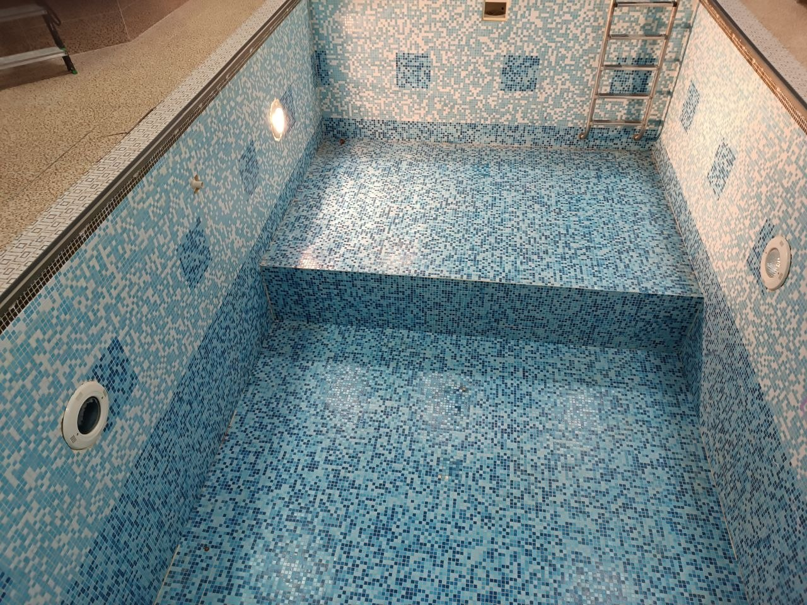

Проектирование бассейнов
Архитектурная концепция, конструктив чаши, гидравлика, оборудование, отделочные материалы и точная смета до старта работ.
АЛ Пулс · с 1995 года
Создаём частные и общественные бассейны, где архитектура, технология и эксплуатация работают как единая система.
Полный цикл работ: от концепции, проекта и сметы до строительства, запуска оборудования и последующего обслуживания.
Архитектурная концепция, конструктив чаши, гидравлика, оборудование, отделочные материалы и точная смета до старта работ.

Гидроизоляция, облицовка, монтаж инженерии, автоматики и пусконаладка.

Обновление чаши, отделки, фильтрации, подсветки, автоматики, водоподготовки и инженерных узлов без лишнего визуального шума.

Регулярное обслуживание, диагностика, сезонный запуск, консервация, настройка химических показателей воды и оперативный ремонт оборудования.
Подготовим предварительный расчёт стоимости, сроки реализации и оптимальную инженерную конфигурацию под ваш объект и задачи.
Многие выполненные проекты реализованы для частных клиентов и объектов с ограничением на публикацию материалов. Поэтому мы показываем инженерные задачи, сложность работ и применённые решения без раскрытия информации о владельцах.
Описание: Разработка и реализация специализированного бассейна для тренировок по гребле с непрерывной нагрузкой и имитацией условий открытой воды.
Основные сложности проекта:
Итог: Создан специализированный тренировочный бассейн с устойчивым потоком воды для длительных занятий и настройки режимов нагрузки.
Проектирование и реализация автоматического раздвижного укрытия для открытого бассейна, расположенного на участке с перепадом высот и нестандартной геометрией примыкания.
Реализовано автоматическое жёсткое укрытие с плавным открыванием и закрыванием несмотря на сложный рельеф участка и разные уровни установки направляющих.
Описание: Проектирование и реализация бассейна с системой понижения уровня воды и подъёмным дном, позволяющей использовать помещение как полноценный зал для мероприятий вне режима эксплуатации бассейна.
Основные сложности проекта:
Итог: Создано трансформируемое пространство: помещение может использоваться как бассейн или как функциональный зал для мероприятий, тренировок и частных событий.
Опыт реализации комплексных решений по интеграции декоративного освещения и световых эффектов в чашах бассейнов с повышенными требованиями к герметичности и долговечности узлов.
Итог: Реализованы проекты с интеграцией сложных световых систем, включая контурную подсветку и декоративные «звёздные» сценарии освещения, при полной герметичности и надёжности эксплуатации.
Помогаем архитекторам и проектировщикам увязать бассейн с архитектурой дома, инженерией и технологией объекта.
Полезные материалы о проектировании, строительстве и обслуживании бассейнов для владельцев домов, архитекторов и девелоперов.
Из чего складывается бюджет: чаша, оборудование, отделка, автоматика, подготовка участка и сервис после запуска.
Как подобрать формат, размер, расположение и инженерные решения для частного дома без лишних затрат.
Преимущества монолитной чаши, этапы работ, гидроизоляция, отделка и важные технические нюансы.
Когда стоит выбирать готовую чашу, как подготовить основание и что учесть при монтаже на участке.
Геология, посадка чаши, гидравлика, техническое помещение и интеграция бассейна с архитектурой дома.
Фильтрация, насосы, подогрев, автоматика, водоподготовка и решения для стабильной чистой воды.
Электронное техническое задание
Заполните электронное техническое задание на строительство бассейна онлайн. Это поможет точно рассчитать стоимость, подобрать оборудование и подготовить проект под ваш участок и бюджет.
Техническое задание на бассейн ускоряет расчет стоимости бассейна и упрощает проектирование бассейна с учетом параметров участка и пожеланий по оборудованию.